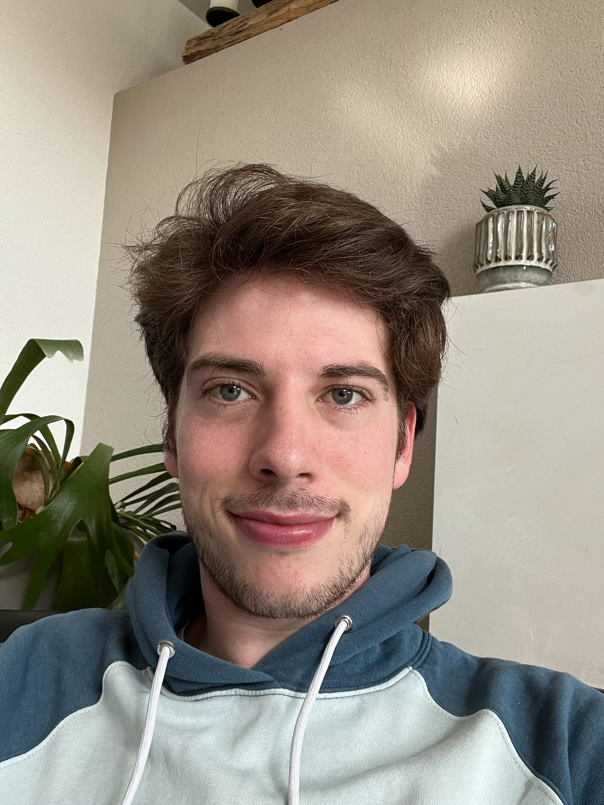
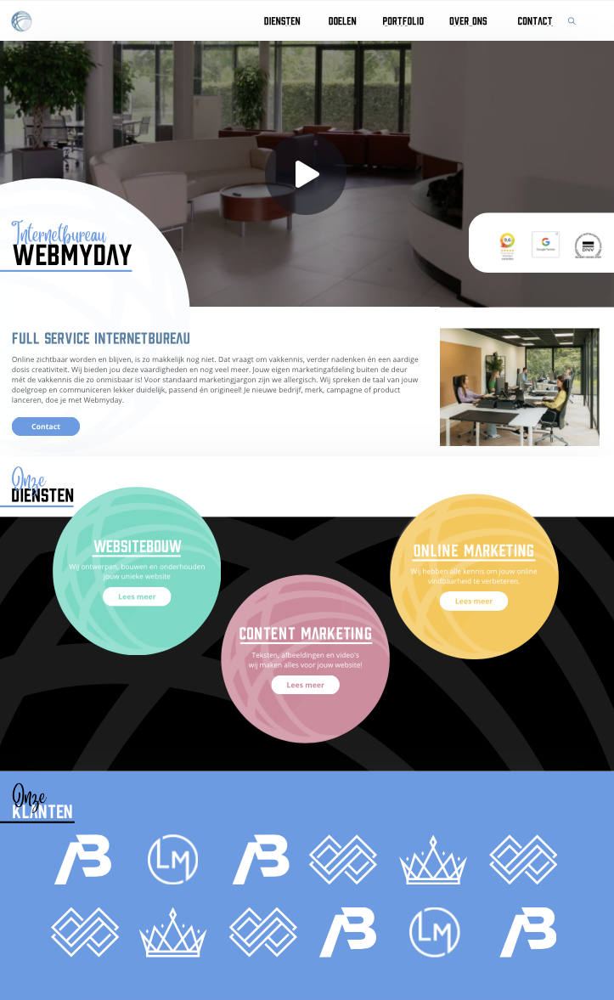
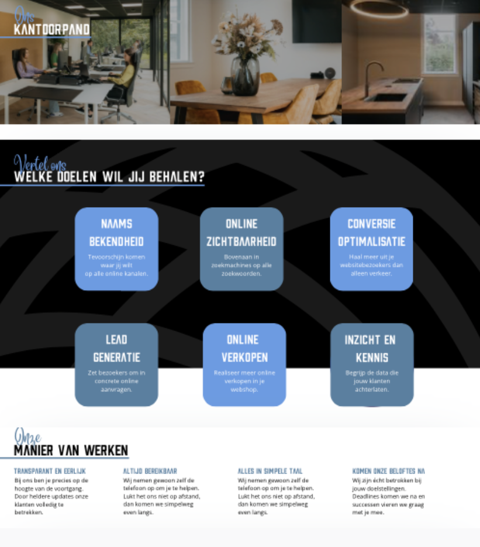
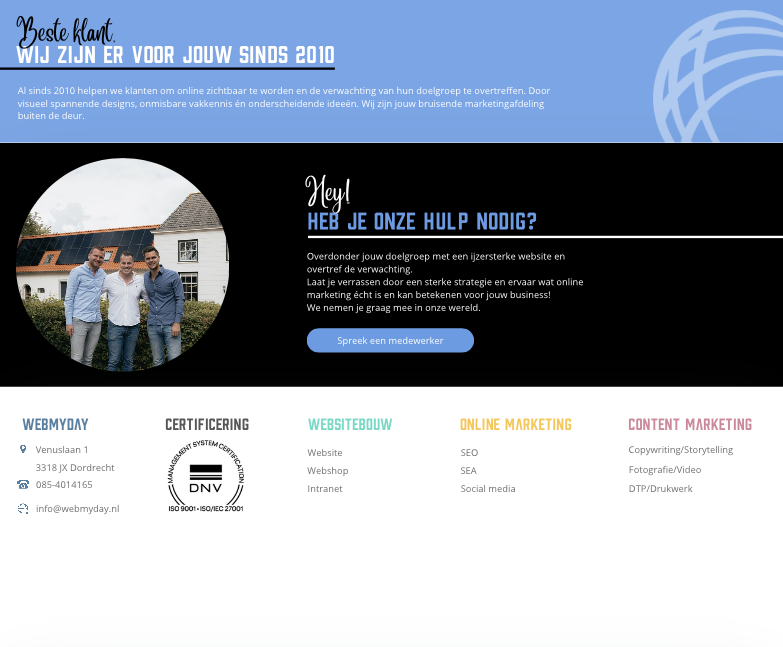
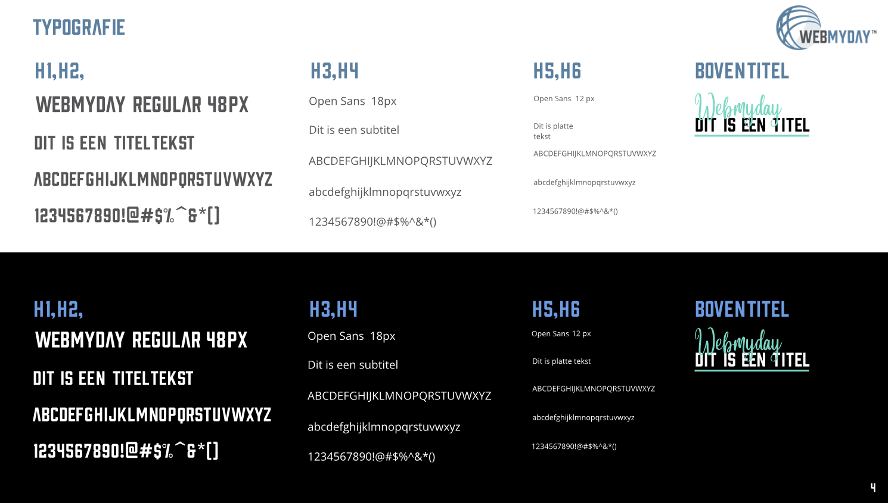
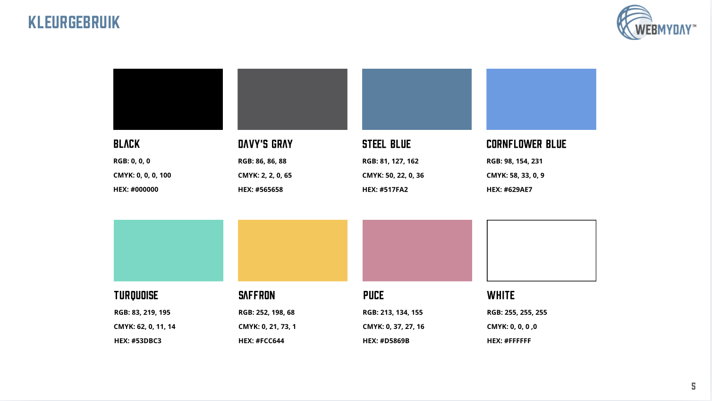
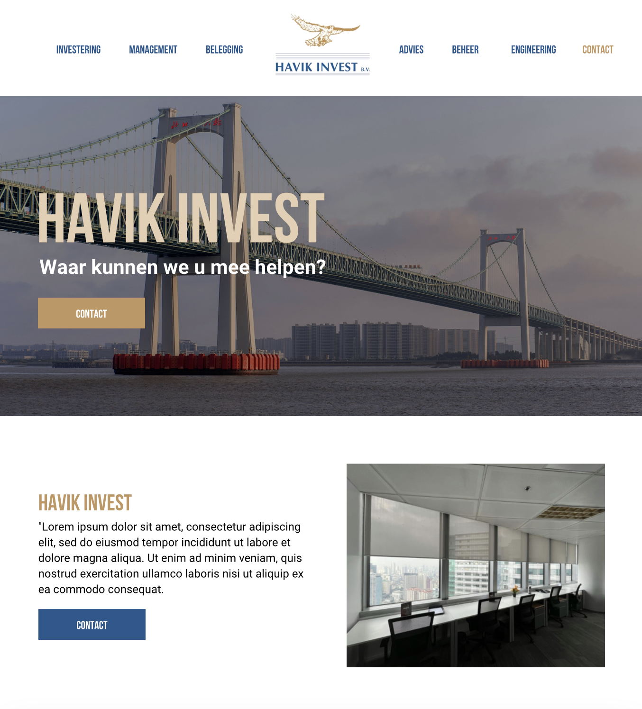
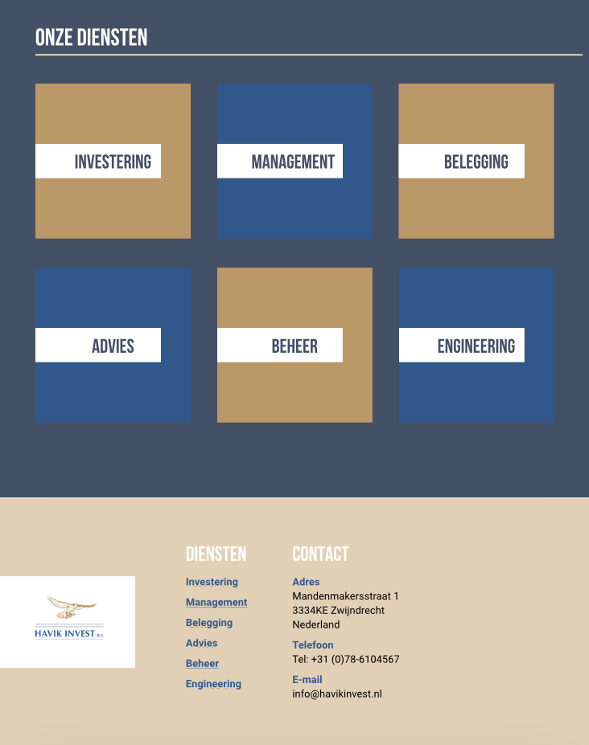
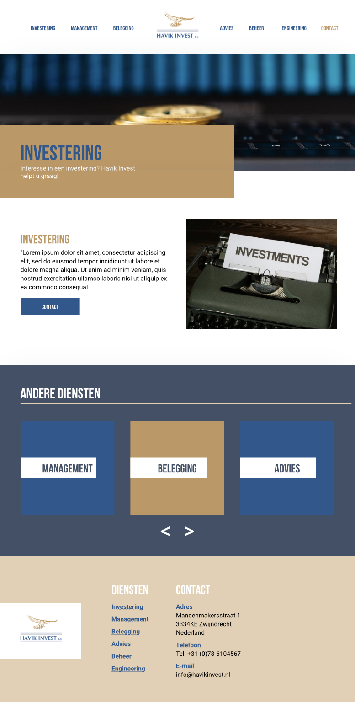
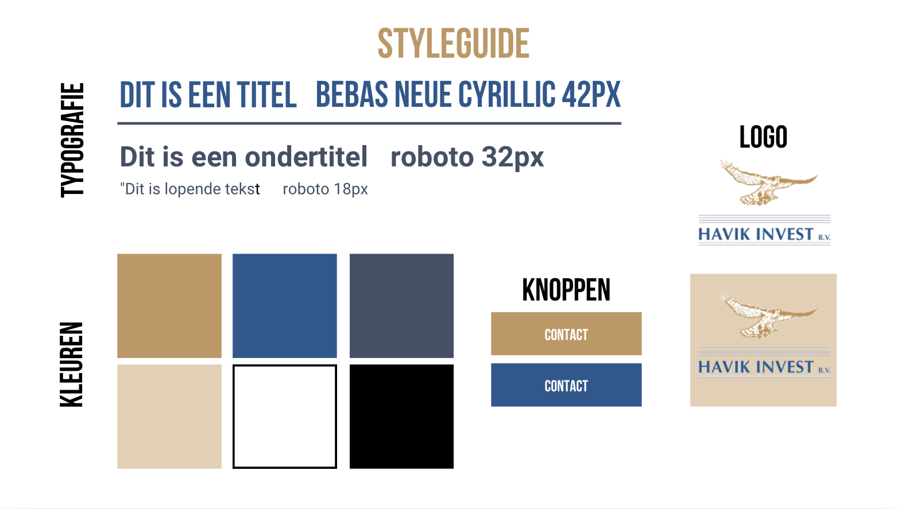

A UI/UX Designer & Front-End Developer passionate about creating intuitive digital experiences that combine user needs with business goals. I am a recently graduated Communication & Multimedia Design student based in the Netherlands.
contact
The goal of this homepage was to create a professional and approachable first impression. A hero video was placed above the fold to immediately communicate the company culture and working environment. Clear calls to action encourage visitors to get in touch, while the service overview helps users quickly find the information they need.

This section focuses on building trust through authentic office imagery and clear communication of the company's goals and working process. The layout uses whitespace to improve readability and guide visitors through the content without overwhelming them.

The final section reinforces credibility by highlighting the company's experience and achievements. A strong call to action motivates visitors to make contact, while the footer provides easy access to important company information and navigation links.

The style guide was designed to balance professionalism with approachability. Clean typography improves readability, while a combination of neutral and accent colors creates a trustworthy visual identity that reflects the company's values.

The primary color palette uses dark blue, gray and black tones to communicate reliability and expertise. Supporting pastel colors add personality and create a more human-centered brand experience without compromising professionalism.

The homepage was designed to create a strong first impression through large visual imagery and a structured layout. Consistent use of the company's brand colors strengthens recognition, while generous whitespace improves readability and creates a premium appearance.

Alternating background colors help separate content sections and keep the page visually engaging. Clear content hierarchy allows visitors to quickly understand the available services while maintaining a clean and professional aesthetic.

The service page was designed to support conversions by combining informative content with clear calls to action. Visual consistency between the homepage and service pages helps users navigate the website confidently while reinforcing the brand identity.

The visual identity was developed around the existing logo and brand values. Professional typography, natural color tones and structured layouts create a reliable appearance that aligns with the expectations of the target audience.
I am a recently graduated Communication & Multimedia Design student
with a passion for UI/UX design, graphic design and front-end
development.
During my studies, I gained experience in user research, interaction
design, prototyping, visual design and front-end development. I enjoy
translating user needs and business goals into intuitive and engaging
digital experiences.
My design approach combines creativity with problem solving. I believe
that strong digital products are created by understanding both the
people using them and the goals behind them.
Outside of design, I enjoy music, storytelling and exploring new
creative ideas that inspire my work.